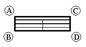

Defining table size and location
Together, the General tab and the Location tab in the Properties dialog box are where you define basic size and placement information for the table or parts list. This includes the maximum table size, where to place the table, how the table grows or shrinks, and how multi-page tables are displayed. You also can move a table to a different sheet.
Specifying maximum table height
Before you place a table, you define the maximum table height on the General tab using either of these methods:
-
Selecting the Maximum number of data rows option and typing a positive integer in the First page box. Once that number of data rows is reached, a new page is created.
-
Selecting the Maximum height option for the table and typing a size value. Once that height is reached, a new page is created.
By default, the maximum table height is the same for all pages. However, by entering different values in the First page box and the Additional pages box, you can define a maximum table height that is different for the first page of the table than it is for all succeeding pages of the table.
Table placement and sheet location
There are two workflows you can use to place a parts list or table and specify its location on the sheet.
-
Place a table on the active sheet
You can place a table on the active working sheet using a predefined origin point or interactively. For this workflow, select the following option on the Location tab:
- Create table on active sheet
-
This places the table where you click or at a specific point on the current sheet. By default, that point is at the origin (0,0) on the drawing sheet. However, you can change the sheet coordinates using the X origin and Y origin boxes if you first select the Enable predefined origin for placement check box.
-
Place a table on automatically created table sheets
You can place a table on one or more new table sheets, which are inserted, named, and grouped automatically in the sheet tab tray. This lets you organize long parts lists or tables into booklets for easier printing. For this workflow, you can select the following option on the Location tab:
- Create new sheets for table
-
This inserts a new sheet and places the table on it at the sheet coordinates specified in the X origin and Y origin boxes. If the table is larger than the maximum table size specified on the General tab, then multiple table sheets are inserted and the table is split among them.
When you create table sheets automatically, you also can use the following options on the Location tab to predefine the formatting for the table sheets.
- First sheet
-
You can use choose a different sheet size and background for the first table sheet.
- Additional sheets
-
You can use this option to choose the same or a different sheet size and background for all table sheets except the first one.
- Show sheet backgrounds
-
You can choose not to display the sheet backgrounds on the table sheets. When you use this check box, only the sheet size is applied.
- Maintain sheets with table size
-
You can use this option to ensure that the table that creates the table sheets also manages the sheets. When the table grows, new sheets are created; when the table gets smaller or is deleted, the unused sheets are deleted also.
Specifying table anchor point for sizing
With either table placement workflow, you can use the Anchor corner option on the Location tab to control table location and sizing. The Anchor corner options are illustrated here:
(A) Top-Left
(B) Bottom-Left
(C) Top-Right
(D) Bottom-Right

-
When the anchor point is on the left, the page gets wider on the right as columns are added. When the anchor point is on the right, the page gets wider on the left as columns are added.
-
When the anchor point is on the top, the page height adjusts on the bottom. When the anchor point is on the bottom, the page height adjusts on the top.
Note:You can select this check box—Fill the end of the table with blank rows—on the General tab to pad the end of the table with empty rows. This ensures that the table is not truncated after the last data row, leaving a gap between the table and the border.
You can use this option for tables that add rows at the top or tables that add rows at the bottom.
Moving tables
On the Location tab, you can use the Sheet control to specify the sheet that you want the table to appear on. For example, you can use it to move a parts list onto the same sheet as the drawing it references.
Working with multi-page tables
In tables that have multiple pages:
-
Left and right anchor points control which side of the table that pages are added.
-
When new columns are added, they are added to each table page.
-
For tables that are placed on the active sheet, the Page gap specifies the minimum distance between each page.
How do I
Create a column for custom property contentCreate a column for user-defined content
Format property text values
Combine properties in a column
Group data in a table
Learn more
Editing a table directlyUsing the Columns tab
Using the Title tab
Using the Data tab
Using the Options tab
Using the Sorting tab
Grouping data in tables
Look up more details
Parts List Properties dialog boxFormat Values dialog box
Format Column dialog box
Insert Row dialog box
Insert Column dialog box
Format Table Cells dialog box